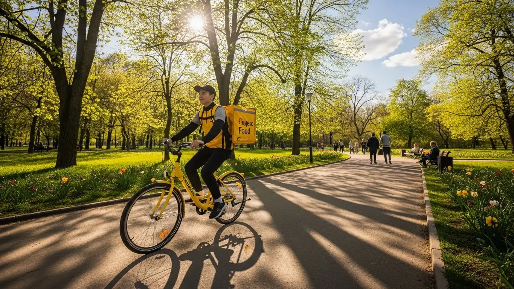
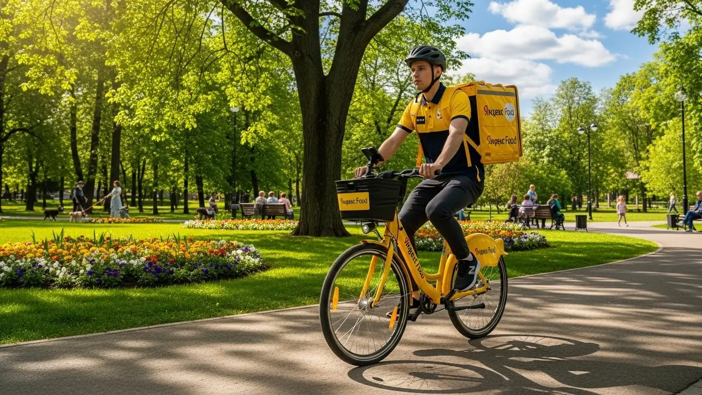
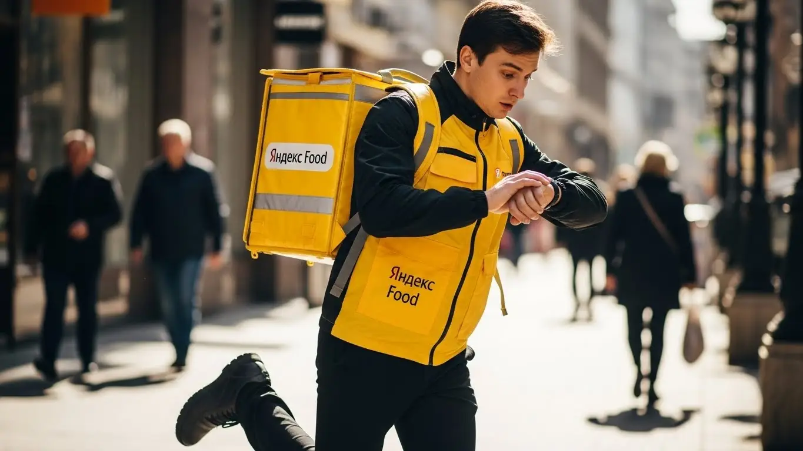

Работа курьером Яндекс Еды в Пензе 2025-2026: доход и условия

- Работа курьером Яндекс Еды в Пензе: для кого эта вакансия и что вы получите
- Сколько вы будете зарабатывать курьером в Пензе: калькулятор дохода и разбор выплат
- Реальный заработок курьера в Пензе: смены и месячный доход
- График работы и форматы занятости
- Требования к кандидату и документы
- Самозанятость, налоги и юридическая чистота
- Пошаговое оформление и первый выход на линию в Пензе
- Пешком, на вело или на авто: что выгоднее в Пензе
- Районы, маршруты и «топовые» зоны заказов в Пензе
- Безопасность, страховка, штрафы и оплата простоя
- Плюсы и возможные минусы работы курьером в Пензе
- Реальные истории и отзывы курьеров из Пензы
- Ответы на главные вопросы о работе курьером Яндекс Еды в Пензе
- Главное по работе курьером в Пензе: краткая шпаргалка
- Заключение: ваш следующий шаг в Пензе
Все города
Здорово, будущий коллега! Думаешь, стоит ли начинать работу курьером Яндекс Еды в Пензе? И сразу в голове вопросы: а сколько я реально заработаю, не «убью» ли свою машину на наших дорогах или велик на брусчатке в центре? Не буду ли часами стоять в пробках на Суворова, выполняя копеечный заказ? Забудь про рекламные обещания «дохода до 100 500 тысяч». Здесь мы поговорим по-честному, как есть, про работу на улицах именно нашего города.
Поверь, понимать «внутрянку» нужно до того, как ты выйдешь на первый заказ, иначе разочарование придёт быстро. Потому что одно дело — видеть красивые цифры в приложении, и совсем другое — вычесть из них бензин, налог и мелкий ремонт. На твой чистый доход в Пензе влияет всё: знаешь ли ты короткие пути в Арбеково, где всегда есть спрос в обед, а где на Западной глухо после девяти вечера. Большинство новичков здесь совершают одни и те же ошибки — и теряют деньги, просто не зная местной специфики. Чтобы сразу оценить условия и увидеть актуальные цифры, загляни на официальную страницу, где собрана вся информация про работу курьером Яндекс Еда в Пензе — там есть и калькулятор, и форма для быстрой заявки.
В этом гиде я разложу всё по полочкам. Мы посчитаем, сколько реально можно заработать в Пензе пешком, на велосипеде и на авто с учётом всех расходов. Я покажу на карте «рыбные» районы и «мёртвые зоны». Расскажу, как погода и пробки на Гагаринском путепроводе влияют на заказы и доход. Мы разберём, за что штрафуют и как этого избежать. И, конечно, сравним, что предлагают конкуренты здесь, в Пензе.
Меня зовут Алексей. Я сам откатал не одну тысячу километров по Пензе с жёлтой сумкой, а сейчас у меня свой небольшой таксопарк-партнёр, так что я знаю эту кухню с обеих сторон. Никакой воды и рекламной шелухи, только факты, личный опыт и советы, которые сэкономят тебе время, нервы и деньги. В общем, давай по порядку, начнём с самого главного.
Прежде чем мы углубимся в детали, давай быстро пробежимся по ключевым моментам. Это поможет сориентироваться в статье.
Что ты точно узнаешь из этого разбора
В этой статье ты ТОЧНО узнаешь:
- Сколько реально можно заработать в Пензе за смену пешком, на вело и на авто, с учётом всех расходов?
- В каких районах Пензы больше всего заказов и как выбирать «фиолетовые зоны», чтобы не кататься впустую?
- Как правильно оформить самозанятость за 10 минут и сколько налогов придётся платить с дохода?
- За что реально штрафуют и как не потерять рейтинг, чтобы получать больше заказов?
- Что выгоднее в Пензе — работать пешком, на велосипеде или на своей машине?
- Как устроен свободный график на самом деле и как планировать слоты, чтобы совмещать работу с учёбой?
А если тебе некогда читать всю статью — переходи сразу к заключению, где ты найдёшь короткие ответы на все эти вопросы и указания, в каких разделах искать подробности.
А чтобы было ещё нагляднее, вот основные цифры по работе в Пензе в одной картинке.
Работа курьером в Пензе: ключевые цифры
Работа курьером Яндекс Еды в Пензе: для кого эта вакансия и что вы получите
Эта работа — не для всех, и я скажу это прямо. Если ты ищешь тёплое место в офисе со стабильным окладом, это не оно. Но если тебе нужны живые деньги, свободный график и понятные правила игры, то вакансия курьера в Пензе — один из лучших вариантов на сегодня. Здесь не важен твой диплом или предыдущий опыт, главное — желание работать и наличие смартфона.
Кому подойдёт эта работа в Пензе
По моему опыту, в доставку приходят совершенно разные люди, и многие находят здесь то, что искали. Во-первых, это студенты пензенских вузов и колледжей. Для них это идеальная подработка: можно выходить на пару часов после пар и зарабатывать на свои расходы, не клянча у родителей. Во-вторых, это люди, которым нужна работа без опыта. Тебя всему научат онлайн за час, и уже на следующий день ты сможешь получить первые деньги.
Также это отличный вариант для тех, кому нужен дополнительный доход к основной зарплате или просто быстрые деньги. С ежедневными выплатами не нужно ждать конца месяца — отработал смену и сразу получил заработок на карту. И, конечно, это работа для водителей-курьеров. Она позволяет автомобилю приносить доход не только в такси, но и на доставке заказов, где нет капризных пассажиров. Если ценишь гибкий график и не любишь сидеть на одном месте — тебе сюда.

Главные преимущества для жителей районов Арбеково, Терновка, ГПЗ-24
Одно из главных удобств, которое многие недооценивают, — возможность работать рядом с домом. Тебе не нужно каждое утро тащиться через всю Пензу на другой конец города. Живёшь, например, в Арбеково — выбираешь слот в своём районе и доставляешь заказы по знакомым улицам. То же самое касается Терновки или района ГПЗ-24.
В этих крупных спальных районах всегда много заказов из местных кафе, пиццерий и магазинов. Ты экономишь время и деньги на дорогу до «рабочего места», потому что твоё рабочее место — это твой район. Открыл приложение «Яндекс Про», вышел из подъезда — и ты уже на смене. Это особенно ценно, когда у тебя всего несколько свободных часов в день.
Краткое обещание по доходу и условиям
Давай по-честному о деньгах. В Пензе активный курьер на полной занятости может зарабатывать в среднем от 45 000 до 70 000 рублей в месяц. Если рассматривать это как подработку на несколько часов в день, то реальный доход за смену составит 1500–2500 рублей. Цифры не с потолка, а из практики моих ребят. Конечно, всё зависит от тебя: как работаешь, какой транспорт используешь и какие смены берёшь.
Ключевые условия просты и прозрачны. Ты сам составляешь себе свободный график, выбирая удобные слоты в приложении. Никаких начальников над душой. Выплаты ежедневные — отработал смену, получил деньги на карту. И самое важное для многих — начать можно без опыта. Всё, что нужно, — это желание, смартфон и готовность двигаться.
Из практики: У меня есть парень, студент ПГУ. Живёт в Дальнем Арбеково. Он выходит на вело-смены по 4 часа вечером, после учёбы. Катается по своему району, знает все дворы и короткие пути. Стабильно привозит по 1500-2000 рублей за вечер. Говорит, на жизнь, развлечения и помощь родителям хватает с головой, и при этом учёбу не запускает.
В итоге, работа курьером в Пензе — это реальная возможность для студентов, людей без опыта и тех, кому нужна подработка со свободным графиком. Главное преимущество — ты работаешь в своём районе и получаешь ежедневные выплаты. Мой совет новичкам: не гонитесь сразу за самыми «жирными» зонами в центре, начните со своего района. Так вы быстрее освоитесь, набьёте руку и поймёте условия работы без лишнего стресса.
Сколько вы будете зарабатывать курьером в Пензе: калькулятор дохода и разбор выплат
Сразу проясню: зарплата курьера — это не фиксированный оклад. Твой доход напрямую зависит от твоей активности, и это, на мой взгляд, честно. Сколько потопал — столько и полопал. Система выплат в Яндекс Еде прозрачная, и если разобраться в ней один раз, ты всегда будешь понимать, откуда берутся деньги и как заработать больше.
Из чего складывается доход курьера
Твой итоговый заработок за смену складывается из нескольких частей, как конструктор. Понимание этих элементов — ключ к хорошему доходу.
- Оплата за заказ. Это базовая сумма за то, что ты взял заказ в ресторане и отнёс его клиенту.
- Доплата за расстояние. Чем дальше нести или везти заказ, тем больше доплатят. Система считает каждый километр твоего пути.
- Повышающие коэффициенты. В часы пик (обед, ужин), в плохую погоду (дождь, снег) или в зонах высокого спроса на карте в приложении «Яндекс Про» появляются специальные зоны, где оплата за заказы умножается. Это твой главный инструмент для увеличения заработка.
- Бонусы. Сервис часто предлагает персональные цели. Например, «выполни 15 заказов за три дня и получи бонус 1000 рублей». Это отличная мотивация.
- Чаевые. Все чаевые, которые оставляют клиенты через приложение, полностью твои. Сервис не берёт с них никакой комиссии.
- Оплата простоя. Важная гарантия. Если ты вышел на запланированный слот, а заказов временно нет, сервис всё равно начисляет минимальную оплату за твоё время на линии. Ты не останешься с нулём в кармане.
- Компенсация проезда. На некоторых очень длинных заказах, особенно если ты пеший курьер, может быть предусмотрена компенсация за проезд на общественном транспорте.
Как пользоваться калькулятором дохода
Чтобы прикинуть свой потенциальный заработок, на сайте есть специальный калькулятор. Пользоваться им просто. Сначала убедись, что выбран твой город — Пенза. Затем выбери, как планируешь доставлять заказы: как пеший курьер, на велосипеде или на своём автомобиле.
После этого укажи, сколько часов в день и сколько дней в неделю ты готов выходить на смены. На основе этих данных и средней статистики по городу калькулятор покажет тебе примерный диапазон твоего дневного и месячного дохода.
Прикинь свой примерный доход в Пензе
Твой примерный доход в месяц:
*Расчёт основан на средней ставке для Пензы и не учитывает бонусы, чаевые и повышенные коэффициенты. Твой реальный доход может быть выше.
Помни, что это ориентир. Твой реальный заработок может быть и выше, если будешь ловить пиковые часы и бонусы. Чтобы посмотреть более точные цифры для нашего города и сразу подать заявку, загляни на страницу, где собрана вся информация про работу курьером Яндекс Еда в твоём городе — там и актуальные условия, и ответы на вопросы, и сама анкета.
Примеры расчёта для пешего, вело- и авто‑курьера в Пензе
Давай на конкретных примерах, чтобы было понятнее, сколько можно заработать в Пензе.
- Пеший курьер. Работает в центре, в районе улицы Московской, где много кафе и заказов на короткие расстояния. За 4-часовую смену в будний день он может выполнить 8–10 заказов и заработать около 1300–1700 рублей. Идеально для подработки.
- Велокурьер. Выбирает для работы спальные районы, например, курсирует между Арбеково и Терновкой. За счёт скорости он за 8-часовую смену делает 15–20 заказов. Его доход может составить 2600–3200 рублей. Это уже полноценная работа с хорошим заработком и пользой для здоровья.
- Водитель-курьер. Работает на авто по всему городу, берёт дальние и крупные заказы, в том числе в пригородные районы вроде Засечного. Особенно выгодно работать в плохую погоду, когда коэффициенты максимальные. За полный рабочий день его доход может достигать 4000–5000 рублей. Из этой суммы нужно вычесть расходы на бензин, но всё равно остаётся очень прилично.
Из практики: Один из моих водителей-курьеров поначалу брал все заказы подряд и катался по всему городу, много жёг бензина. Потом я ему посоветовал сосредоточиться на одной-двух зонах с высоким спросом в пиковые часы. Он стал работать в районе ТЦ «Коллаж» и «Суворовский» с 17:00 до 21:00. В итоге стал зарабатывать столько же, но за 4-5 часов вместо 8-9, и тратить на топливо почти вдвое меньше.
Итак, твой заработок — это не просто ставка, а сумма нескольких факторов. Чтобы зарабатывать больше, нужно не просто выполнять заказы, а делать это с умом. Понимание этих условий работы и грамотное использование приложения «Яндекс Про» — ключ к хорошему доходу. Всегда следи за картой спроса: работа в «фиолетовых» зонах с высоким коэффициентом может принести за час столько же, сколько за три часа обычной работы.
Реальный заработок курьера в Пензе: смены и месячный доход
Давай к главному — к деньгам. Сколько реально можно заработать курьером в Яндекс Еде в Пензе, если отбросить рекламные обещания? Цифры зависят от трёх вещей: как ты передвигаешься, сколько часов работаешь и насколько с головой подходишь к делу. Я не буду кормить тебя сказками, вот честный расклад по нашему городу.
Диапазон дохода для подработки и полной занятости
Если ты ищешь подработку на 2–4 часа в день, например, после учёбы или основной работы, то цифры примерно такие. Пеший курьер в центре за вечер сделает 600–1000 рублей. Велокурьер за то же время заработает уже 800–1500 рублей, потому что успеет выполнить больше заказов. Курьер на автомобиле, особенно если захватит пиковые часы, может рассчитывать на 1200–2000 рублей за короткую смену. Это «грязными», без учёта расходов.
При полной занятости, то есть на смене 8–10 часов, зарплата совсем другая. Пеший курьер в среднем за день зарабатывает 1800–2500 рублей. Велосипедист, который активно крутит педали, может выйти на 2500–3500 рублей. Водитель-курьер на своём авто при полной загрузке и работе в зонах с высоким спросом делает 3500–5000 рублей в день. В месяц при графике 5/2 это выливается в 50–70 тысяч для велокурьера и 70–100 тысяч для автокурьера до вычета расходов на бензин и налоги.
Как район, время суток и погода влияют на доход
Твой заработок — это не фиксированная ставка. Он постоянно меняется, и на это можно и нужно влиять. Главный инструмент — повышенные коэффициенты. Когда в каком-то районе заказов становится больше, чем свободных курьеров, сервис начинает доплачивать за каждый заказ. В приложении «Яндекс Про» такие зоны подсвечиваются разными цветами, от жёлтого до фиолетового — чем ярче, тем выше доплата.
Пиковые часы в Пензе стандартные: обед с 12:00 до 14:00 и вечерний час пик с 18:00 до 21:00. В это время люди массово заказывают еду из ресторанов через Яндекс Еду в центре, в районе Московской улицы, и в спальные районы вроде Арбеково или Терновки. Отдельная история — плохая погода. Как только начинается дождь, сильный снегопад или мороз, коэффициенты взлетают. Многие курьеры остаются дома, а количество заказов растёт в разы. Да, работать некомфортно, но именно в такие дни можно за 3–4 часа сделать дневную норму. Плюс, в непогоду клиенты чаще оставляют щедрые чаевые.
Советы по увеличению заработка от опытных курьеров
Чтобы зарабатывать больше, не обязательно работать сутками. Вот несколько проверенных советов. Во-первых, планируй смены. Заранее бронируй плановые слоты в приложении Яндекс Про на вечернее время и выходные — так у тебя будет приоритет в заказах. Во-вторых, не гоняйся за каждым «фиолетовым» пятном на карте. Выбери одну-две зоны, где много ресторанов и плотная жилая застройка (например, центр или район ТЦ «Коллаж»), и работай там. Постоянные метания через весь город съедят больше времени и денег, чем ты заработаешь на коэффициенте.
В-третьих, правильно используй свой транспорт. Если ты велокурьер, твоя стихия — центр с его короткими заказами и пробками, где ты обгонишь любую машину. Для курьера на автомобиле, наоборот, выгоднее брать дальние доставки между районами, например, с ГПЗ-24 в Арбеково, или работать в часы, когда на дорогах посвободнее. И не отказывайся от мультизаказов (когда забираешь несколько заказов из одного ресторана) — это прямой путь к увеличению дохода в час.
Давай на живом примере. Один из моих водителей-курьеров, парень лет 25, работает только по вечерам и в выходные. Его стратегия проста: он выбирает плановый слот с 19:00 до 23:00 в районе Дальнего Арбеково. Там много новостроек и стабильный поток заказов из местных пиццерий и суши-баров. В обычный будний вечер он делает около 1800 рублей. Но в прошлую субботу был сильный ливень. Коэффициент держался на уровне x1.7. За те же 4 часа он заработал почти 3200 рублей. Вот так погода и правильный выбор зоны напрямую влияют на итоговую сумму.
Сравнение потенциального дохода в Пензе
| Тип курьера | Подработка (2–4 часа/день) | Полная занятость (8–10 часов/день) |
|---|---|---|
| Пеший курьер | 600 – 1000 ₽ | 1800 – 2500 ₽ |
| Велокурьер | 800 – 1500 ₽ | 2500 – 3500 ₽ |
| Автокурьер | 1200 – 2000 ₽ | 3500 – 5000 ₽ |
В итоге, твой реальный заработок в Пензе напрямую зависит от твоей активности и умения ловить момент. Деньги на линии есть, и немалые, но их нужно брать, а не ждать. Мой совет: начни с подработки, прощупай районы, пойми, когда и где больше заказов, и только потом решай, стоит ли переходить на полную занятость.
График работы и форматы занятости
Одно из главных преимуществ этой работы — гибкость. Ты сам себе начальник и решаешь, когда и сколько работать. Это не просто красивые слова, а реальный инструмент, который позволяет вписать доставки в любой образ жизни. Но чтобы этот свободный график приносил деньги, а не разочарование, им нужно грамотно пользоваться.
Подработка после учёбы или основной работы
Формат подработки идеально подходит для студентов и тех, у кого уже есть основная работа. Тебе не нужно увольняться или прогуливать пары. Ты просто открываешь приложение, когда у тебя есть свободные 2, 3 или 4 часа, и выходишь на линию.
Например, студент ПГУ заканчивает учиться в три часа дня. Он может отдохнуть, сделать дела, а в шесть вечера сесть на велосипед и отработать 4-часовой слот до десяти. За неделю, выходя так 4–5 раз, он спокойно заработает 5–7 тысяч рублей. Этого вполне хватит на личные расходы. Другой пример — менеджер, который работает в офисе с 9 до 18. Он приезжает домой, ужинает и в пятницу вечером выезжает на своей машине на 3–4 часа. Плюс активно работает в субботу. Такая подработка приносит ему дополнительные 15–20 тысяч в месяц, которые он тратит на кредит за машину или откладывает на отпуск.
Полная занятость: как выглядит типичный день курьера
Если рассматривать работу курьером как основную, то день строится вокруг пиков спроса. Типичный день курьера на полной занятости в Пензе выглядит так: выход на линию около 10–11 утра, чтобы успеть к первым заказам из магазинов и началу обеденного бума. С 12:00 до 14:00 — самое жаркое время, заказы идут один за другим, особенно в центре.
После 15:00 наступает затишье. Это лучшее время, чтобы спокойно пообедать, заправить машину или просто отдохнуть. Многие опытные курьеры в это время либо уходят с линии на пару часов, либо переключаются на более спокойные заказы Яндекс Доставки по городу. Примерно с 17:30 спрос снова начинает расти, достигая пика к 19:00–20:00. Вечером основной поток заказов смещается из офисного центра в спальные районы. Рабочий день обычно заканчивается в 21:00–22:00.
Как планировать слоты и выходы через приложение «Яндекс Про»
Управлять своим графиком ты будешь через приложение Яндекс Про. Есть два основных режима: свободный выход и плановые слоты. Свободный выход — это когда ты просто нажимаешь кнопку «На линию» в любое время. Это удобно, но в часы низкого спроса можно просидеть без заказов.
Плановые слоты — это твой ключ к стабильному доходу. Ты заранее, хоть на неделю вперёд, выбираешь в расписании удобные тебе временные интервалы и район. Работая на слоте, ты получаешь приоритет при распределении заказов. А на некоторых слотах действует гарантия минимального дохода: даже если заказов будет мало, сервис доплатит до определённой суммы. Главное правило слота — пунктуальность. Начинать его нужно вовремя и в той геоточке, которая указана в приложении. Регулярные опоздания или раннее завершение смены негативно влияют на твой рейтинг, а от него зависит, как часто и какие заказы ты будешь получать.
Был у меня случай с новичком. Он выходил на свободные смены в своём спальном районе в середине дня и жаловался, что заказов почти нет. Я просто показал ему, как забронировать несколько вечерних слотов в центре города. Его заработок за то же количество часов вырос вдвое уже на первой неделе. Так что не игнорируй планирование — это твой прямой путь к хорошим деньгам.
В общем, график действительно свободный, но эта свобода требует дисциплины. Чтобы хорошо зарабатывать, нужно понимать, когда и где ты нужен клиентам. Используй плановые слоты для стабильности, а свободные выходы — для дополнительной подработки, когда видишь на карте высокий спрос.
Требования к кандидату и документы
Возраст, гражданство и базовые условия
Давай сразу по-честному, без лишней воды. Чтобы стать курьером Яндекс Еды в Пензе, тебе должно быть полных 18 лет. Никаких исключений, это строгое правило. По гражданству тоже всё чётко: нужен паспорт РФ или одной из стран ЕАЭС (Беларусь, Казахстан, Армения, Киргизия). Если с этим порядок, идём дальше.
Олимпийской подготовки не требуется, но работа проходит на ногах, поэтому базовая выносливость пригодится. Если ты пеший курьер, будь готов много ходить, особенно в центре Пензы, где заказы идут один за другим. Велокурьеру, само собой, нужно уверенно держаться в седле и не бояться городских улиц. Для водителя-курьера, который работает на своем авто, главное — стаж вождения и аккуратность на дороге. В целом, если у тебя нет серьёзных проблем со здоровьем, которые мешают двигаться, ты справишься.
Какие документы нужны для работы курьером
Бюрократии тут минимум, но подготовиться стоит заранее, чтобы не терять время. Вот базовый список документов, который потребуется для оформления в Пензе. Собери всё сразу, и процесс пойдёт как по маслу.
Вот что тебе понадобится:
- Паспорт. Основной документ, без него никуда. Нужен для подтверждения личности и возраста.
- ИНН (Идентификационный номер налогоплательщика). Он нужен для регистрации в качестве самозанятого и уплаты налогов. Если не помнишь свой номер, его легко найти на сайте ФНС за пару минут.
- Банковская карта. Нужна карта любого российского банка, оформленная на твоё имя. На неё будут приходить ежедневные выплаты. Убедись, что знаешь полные реквизиты счёта, а не только номер карты.
- Медицинская книжка. Для работы с продуктами питания она обязательна. Если у тебя её нет, не проблема — сервис часто помогает с её оформлением или компенсирует затраты. Уточни этот момент при регистрации, условия могут меняться.
Подготовь эти документы, и сможешь пройти регистрацию максимально быстро. Это не сложнее, чем оформить сим-карту, главное — внимательность.
Можно ли работать с 16 лет и какие есть альтернативы
Частый вопрос от молодых ребят: берут ли в Яндекс Еду с 16 лет? Отвечаю прямо: нет, не берут. Официально стать курьером-партнёром сервиса можно только с 18 лет. Это связано с материальной ответственностью за заказы и юридическими тонкостями оформления самозанятости. Никакие согласия от родителей здесь, к сожалению, не помогут.
Если тебе 16–17 лет и хочется заработать, не стоит отчаиваться. Рассмотри другие варианты подработки, которые доступны подросткам в Пензе. Например, можно попробовать себя в роли промоутера, помощника в кофейне или расклейщика объявлений. Да, это не так технологично и гибко, как работа курьером, но это реальный способ получить первый опыт и карманные деньги, пока не исполнится 18.
Был у меня случай. Пришёл парень, 17 лет, горел желанием работать курьером на автомобиле (на отцовской машине). Очень толковый, всё схватывал на лету. Пришлось ему отказать, закон есть закон. Объяснил ему всё как есть, посоветовал пока подтянуть знания по ремонту авто в гараже. Через год он вернулся, уже с правами и совершеннолетний. За пару месяцев стал одним из лучших водителей-курьеров в районе Арбеково, потому что за год подготовился и точно знал, чего хочет.
В общем, основные требования и условия работы простые и понятные: возраст от 18, гражданство РФ или ЕАЭС и базовый пакет документов. Не нужно бояться бумажной волокиты, её здесь практически нет. Главное — твоё желание работать и зарабатывать. Если с документами всё в порядке, то от подачи анкеты до первого заказа может пройти меньше суток.
Самозанятость, налоги и юридическая чистота
Почему курьеры Яндекс Еды работают как самозанятые
Многих новичков пугает слово «самозанятость», кажется, что это что-то сложное и связанное с налогами и отчётами. На деле всё наоборот. Самозанятость (или налог на профессиональный доход, НПД) — это самый простой и легальный способ сотрудничать с сервисом и получать официальный доход. Яндекс работает с курьерами именно в таком формате, потому что это выгодно и прозрачно для обеих сторон.
Для тебя как для курьера это огромный плюс. Во-первых, твой доход полностью «белый». Ты можешь спокойно брать кредиты, подтверждать свой заработок для визы или других целей. Во-вторых, нет никакой сложной бухгалтерии: не нужно нанимать бухгалтера или сдавать декларации. Всё происходит автоматически. В-третьих, это даёт тебе свободу и по-настоящему свободный график — ты не сотрудник в штате, а независимый партнёр, который сам решает, когда и сколько ему работать.

Как за 10 минут оформить самозанятость через «Мой налог»
Оформить статус самозанятого — дело нескольких минут. Серьёзно, это проще, чем зарегистрироваться в новой соцсети. Самый удобный способ — через официальное приложение от налоговой службы «Мой налог». Оно доступно и на Android, и на iOS.
Вот простая пошаговая схема:
- Скачай приложение «Мой налог» из Google Play или App Store.
- Открой приложение и нажми «Зарегистрироваться». Выбери способ регистрации по паспорту РФ.
- Отсканируй паспорт. Просто наведи камеру телефона на главный разворот паспорта. Приложение само распознает все данные.
- Сделай селфи. Программа сравнит твою фотографию с фото в паспорте, чтобы подтвердить личность.
- Подтверди регистрацию. Проверь данные и нажми кнопку подтверждения. Всё, с этого момента ты официально самозанятый.
Весь процесс занимает от силы 10 минут. Никаких поездок в налоговую, никаких очередей. После этого тебе останется только привязать свой статус в приложении «Яндекс Про», и можно начинать выполнять заказы.
Сколько и как платить налоги
Теперь о самом главном — о деньгах. Ставка налога для самозанятого курьера, работающего с Яндексом (юридическим лицом), составляет 6% от дохода. Не 13%, как НДФЛ при работе по трудовому договору, а именно 6%. Это одна из самых низких налоговых ставок в стране.
Самое удобное, что тебе не нужно ничего считать вручную. Яндекс сам передаёт данные о твоих доходах в налоговую. В приложении «Мой налог» ты будешь видеть, какая сумма налога начислена. Оплатить его нужно до 28-го числа следующего месяца. Например, налог за работу в мае нужно заплатить до 28 июня. Это можно сделать прямо в приложении, привязав банковскую карту. Процесс полностью автоматизирован и исключает ошибки. Работать так гораздо безопаснее и спокойнее, чем получать «серый» кэш и постоянно переживать.
Один из моих водителей долгое время работал через парк-партнёр, не хотел связываться с самозанятостью. Боялся, что запутается в налогах. Я сел с ним, показал на своём телефоне приложение «Мой налог», и мы вместе за 10 минут его зарегистрировали. Через месяц он пришёл и сказал спасибо. Говорит, теперь всё прозрачно: видит каждый рубль, который заработал, и точно знает, сколько заплатил налога. Плюс, выплаты стали приходить моментально, а не раз в сутки, как было в парке.
Сравнение форматов: самозанятость vs. работа через парк
| Параметр | Самозанятый (СМЗ) | Работа через парк-партнёр |
|---|---|---|
| Налоги | Платишь сам — 6% с дохода через приложение «Мой налог» | Парк удерживает налоги и свою комиссию (обычно 3-5%) |
| Вывод денег | Моментальные/ежедневные выплаты на карту в любое время через «Яндекс Про» | По графику парка (раз в сутки или реже), часто с комиссией за вывод |
| Прозрачность | Полный контроль над доходами и налогами в приложении | Зависит от честности парка, возможны скрытые комиссии |
| Официальный доход | Да, подтверждается справкой из приложения «Мой налог» | Зависит от схемы работы парка, не всегда «белый» доход |
Итог по юридической части простой: самозанятость — это не страшно, а удобно и выгодно. Такое оформление даёт тебе официальный статус, «белый» доход и минимальную налоговую нагрузку без лишней головной боли. Мой совет: не бойся этого шага. Разберись один раз, и дальше всё будет работать на автомате, позволяя тебе спокойно сосредоточиться на заработке и выполнении заказов.
Пошаговое оформление и первый выход на линию в Пензе
Многие думают, что устроиться на работу, даже на подработку, — это долго и муторно: собеседования, бумажки, ожидание. Здесь всё иначе. Процесс отлажен так, чтобы ты мог стать курьером и выйти на линию буквально на следующий день. А благодаря ежедневным выплатам первые деньги окажутся на карте сразу после смены. Никаких начальников и сложных согласований — у тебя будет свободный график, который управляется через приложение. Главное — твоё желание работать.
Из практики: парень у меня в парке, студент ПГУ, искал подработку без опыта. Заполнил анкету вечером в понедельник, пока смотрел сериал. Утром во вторник прошёл онлайн-обучение, которое заняло меньше часа. Днём заехал в офис партнёра на улице Суворова, забрал сумку. Вечером того же дня уже вышел на свой первый двухчасовой слот в центре Пензы. Сделал 4 заказа и заработал первые 700 рублей. Говорит, не ожидал, что всё так быстро и без бюрократии.
В общем, условия работы максимально простые и рассчитаны на то, чтобы ты не терял время. От момента, как ты решил попробовать, до первого заработка может пройти меньше суток. Мой совет: чтобы быстрее пройти проверку, сразу подготовь фото паспорта и ИНН — это основные документы, которые понадобятся для анкеты.
Шаг 1–2: анкета и онлайн‑обучение
Всё начинается с простой анкеты на сайте, чтобы стать курьером Яндекс Еды. Никаких резюме и сочинений на тему «почему я хочу здесь работать». Нужно указать базовые данные: ФИО, номер телефона, город — Пенза, гражданство. После этого твои данные уходят на быструю проверку, которая обычно занимает от 15 минут до пары часов.
Как только анкету одобрят, тебе откроется доступ к короткому онлайн-обучению. Это не нудные лекции, а несколько видеороликов и тестов прямо в приложении. Там по делу объясняют основы: как общаться с клиентами и ресторанами, как пользоваться приложением «Яндекс Про», что делать в нестандартных ситуациях. Тесты простые, на понимание материала — справится любой, кто внимательно посмотрит ролики.
Шаг 3: получение сумки и доступа к заказам в Пензе
После успешного обучения остаётся последний шаг — получить экипировку. Главный рабочий инструмент — это фирменная термосумка или термокороб. Без неё система не даст доступ к заказам из ресторанов и магазинов, так как для работы в Яндекс Еде важно сохранить температуру блюд и свежесть продуктов.
В Пензе получить термокороб можно в офисе одного из партнёров сервиса. Точный адрес появится прямо в приложении «Яндекс Про» после того, как ты пройдёшь обучение. Не нужно ничего искать самому — просто следуй инструкции на экране. Приезжаешь, показываешь данные, забираешь сумку, и твой аккаунт полностью активирован и готов к работе.
Шаг 4: первый слот и первый доход
Как только аккаунт активен, ты можешь планировать своё рабочее время. Это и есть свободный график: в приложении «Яндекс Про» ты увидишь карту Пензы с доступными зонами и слотами — временными интервалами, на которые можно записаться. Для первого раза советую выбрать знакомый район, например, тот, где живёшь — Арбеково, Терновка или Западная поляна. Так будет спокойнее и проще ориентироваться.
Выбираешь удобный слот, например, на 4 часа вечером, подтверждаешь его и в назначенное время выходишь на линию. Приложение само начнёт предлагать заказы поблизости. Выполняешь первый, второй, третий — и вот уже на твоём балансе появляются первые деньги. Сервис предлагает ежедневные выплаты, так что свой первый доход ты сможешь вывести на карту уже после первой же смены.
Пешком, на вело или на авто: что выгоднее в Пензе
Выбор транспорта — ключевой момент, от которого напрямую зависят твой заработок и условия работы. В Пензе у каждого формата есть свои сильные стороны. Кто-то наматывает километры пешком в центре, кто-то гоняет на велосипеде по спальным районам, а кто-то на машине закрывает дальние заказы. Важно сразу понять, что подходит именно тебе, твоей выносливости и целям.
Один из моих водителей начинал как пеший курьер. Работал в центре, в день выходило 1500–2000 рублей. Но уставал сильно, и в плохую погоду было тяжко. Потом купил недорогой велосипед. Стал брать слоты в Арбеково, где сам живёт. За счёт скорости и больших расстояний его доход вырос до 2500–3000 рублей за ту же 8-часовую смену. Говорит, что для спальных районов Пензы велик — идеальный вариант, если нет машины.
Сравнение форматов доставки в Пензе
| Параметр | Пеший курьер | Велокурьер | Водитель-курьер |
|---|---|---|---|
| Потенциальный доход | Средний | Высокий | Максимальный |
| Расходы | Минимальные (проезд) | Низкие (обслуживание) | Высокие (бензин, амортизация) |
| Лучшие районы в Пензе | Центр (ул. Московская) | Спальные районы (Арбеково, Терновка) | Весь город и пригород |
| Главный плюс | Нет затрат на транспорт | Скорость и маневренность | Комфорт и большие заказы |
| Главный минус | Низкая скорость, усталость | Зависимость от погоды | Пробки, расходы на авто |
В итоге, выбор транспорта определяет твою стратегию работы. Для старта и подработки в центре подойдёт пеший формат. Для активной работы в спальных районах — велосипед, а для максимального заработка по всему городу — автомобиль. Мой совет: если сомневаешься, начни пешком. Уже через неделю ты поймёшь, какие заказы тебе нравятся, и сможешь решить, стоит ли пересаживаться на велосипед или авто.
Пеший курьер: для центра и плотной застройки в Пензе
Если у тебя нет велосипеда или машины, работа пешим курьером — отличный старт. Особенно этот формат выгоден в центре Пензы. Представь себе улицу Московскую и прилегающие к ней кварталы: здесь на каждом шагу кафе, рестораны и магазины, а клиенты живут в соседних домах. Расстояния между точками А и Б часто не превышают километра. На машине тут только в пробках стоять, а пешком ты быстро срежешь путь через дворы.
Плотная застройка исторического центра, района Ростка или окрестностей Фонтанной площади — идеальная среда для пешего курьера. Заказы поступают один за другим, и за короткий слот можно выполнить приличное их количество. Тяжёлые заказы из супермаркетов будут реже, но доставка из Яндекс Еды обеспечит стабильный поток. К тому же, это отличная возможность поддерживать себя в форме без спортзала.
Велокурьер: быстрые доставки между спальными районами
Велосипед даёт курьеру суперспособность — игнорировать пробки. Это идеальный транспорт для крупных спальных районов Пензы, таких как Арбеково или Терновка. Здесь расстояния уже больше, чем в центре, и пешком много не заработаешь. А вот на велосипеде можно быстро перемещаться между микрорайонами, доставляя заказы из пиццерий, суши-баров и магазинов у дома.
Главные преимущества велокурьера — скорость и экономия, которые напрямую влияют на доход. Ты не тратишься на бензин или проезд, а средний чек заказа выше, чем у пешего, за счёт большего расстояния. По сути, это оплачиваемый фитнес: крутишь педали, дышишь воздухом и получаешь за это деньги. Для студентов и активных людей, которые хотят совмещать подработку с физической нагрузкой, это лучший вариант.
Водитель‑курьер: заказы по всему городу и пригороду Заречный, Бессоновка
Работа водителем-курьером на своем авто открывает доступ к самым денежным заказам. Это доставка на большие расстояния между разными концами города, например, из Арбеково в Ахуны. Также на машине выгодно возить заказы в пригородные районы, такие как Заречный, Бессоновка или посёлок Мичуринский, куда пешком или на велосипеде просто не добраться. Кроме того, водители-курьеры часто получают крупные заказы из гипермаркетов в рамках сервиса Яндекс Доставка.
Работа на автомобиле особенно выгодна в плохую погоду — в дождь или мороз спрос на доставку резко возрастает, а вместе с ним и коэффициенты. Пока другие курьеры пережидают непогоду, ты спокойно работаешь в тепле и комфорте, зарабатывая больше. Да, есть расходы на бензин и обслуживание машины, но они с лихвой окупаются объёмом и стоимостью заказов.
Районы, маршруты и «топовые» зоны заказов в Пензе
Чтобы работа курьером в Пензе приносила хороший доход, мало просто крутить педали или руль. Нужно понимать город, знать, где и когда «клюёт». Опытный курьер — это немного рыбак и немного таксист: он не ждёт заказ у моря погоды, а едет туда, где есть спрос. Карта в приложении «Яндекс Про» — твой главный инструмент, но её нужно уметь читать и действовать на опережение.
Где больше всего заказов: ТРЦ, бизнес‑центры и туристические места
Самые «жирные» заказы с высокими коэффициентами, когда карта в приложении горит фиолетовым, концентрируются в нескольких понятных точках. Во-первых, это крупные торговые центры с их фуд-кортами. В Пензе это в первую очередь ТРЦ «Коллаж» и «Высшая Лига». С 12 до 15 часов дня и с 18 до 21 вечера оттуда идёт непрерывный поток заказов из ресторанов и кафе.
Во-вторых, это центр города. Улица Московская и прилегающие к ней кварталы — зона постоянного спроса. Днём здесь много офисов, сотрудники которых заказывают бизнес-ланчи. Вечером и в выходные это главная прогулочная зона, где люди заказывают еду из многочисленных кафе.
Особенно сильно спрос в центре взлетает в плохую погоду, потому что мало кто хочет выходить на улицу. Если твоя цель — максимум заказов в час, держись этих зон.
Работа в своём районе: примеры для популярных жилых кварталов
Многие думают, что весь заработок только в центре, но это не так. Можно отлично зарабатывать, не выезжая из своего района, особенно если живёшь в крупном «спальнике». Например, в Арбеково или Терновке огромное количество многоэтажек, а значит, и потенциальных клиентов. Вечерами и в выходные люди массово заказывают пиццу, суши и продукты из магазинов у дома.
В этих районах тоже есть свои точки притяжения: небольшие торговые центры, супермаркеты, местные кафе. Работая здесь, ты экономишь время и топливо на поездках через весь город. К тому же ты отлично знаешь все дворы и подъезды, что позволяет выполнять заказы быстрее. Такой свободный график — идеальный вариант для подработки на несколько часов в день.
Как выбирать зоны и слоты в «Яндекс Про», чтобы не мотаться впустую
Приложение «Яндекс Про» — твой штурман. На карте всегда видно зоны повышенного спроса, они подсвечиваются разными цветами. Зелёный — спрос обычный, жёлтый и красный — повышенный. Фиолетовый — самый пик, там действуют максимальные повышающие коэффициенты к стоимости заказа. Новичкам советую не гоняться за каждой фиолетовой зоной на другом конце города — пока доедешь, спрос может упасть, а ты зря потратишь время и бензин.
Лучшая стратегия — брать плановые слоты. Ты заранее выбираешь район и время работы, и сервис будет стараться подкидывать тебе заказы именно там. Это даёт стабильность. Если работаешь в свободном режиме, старайся выстраивать маршруты логично. Получил заказ из центра в Арбеково? Отлично, после его выполнения останься там на полчаса — скорее всего, появится заказ в обратную сторону или по району. Думай на шаг вперёд, чтобы не кататься порожняком.
Вот недавний пример из практики. Парень-студент, курьер на велосипеде, взял плановый слот на 4 часа вечером в районе ГПЗ-24. Сначала он спокойно развозил заказы из местных пиццерий и «Магнита». Ближе к 9 вечера он увидел на карте, что в центре, у ТРЦ «Суворовский», горит фиолетовая зона. Он не сорвался сразу, а дождался заказа, который вёл его в ту сторону. В итоге он закончил смену в центре, поймав пару дорогих заказов с высоким коэффициентом. За 4 часа его доход составил около 1900 рублей, потому что он грамотно скомбинировал работу в спальнике и рывок в «рыбное» место.
Итак, знание районов Пензы — твой главный козырь. Понимание того, где находятся ТРЦ вроде «Коллажа» и «Высшей Лиги» и как живёт центр, поможет ловить пиковый спрос. Но не стоит пренебрегать и своим районом, будь то Арбеково или Терновка, — там тоже есть стабильный поток заказов. Мой совет: изучай карту в «Яндекс Про», но не следуй за ней слепо. Учись предсказывать, где будет спрос, и планируй свои перемещения, чтобы не наматывать пустые километры и увеличивать заработок.
Безопасность, страховка, штрафы и оплата простоя
Работа курьером — это постоянное движение, а значит, есть определённые риски. Но не нужно этого пугаться. В сервисах Яндекса выстроена целая система, которая защищает тебя на линии: от бесплатной страховки до оплаты простоя. Главное — знать условия работы и соблюдать их. Это несложно, но критически важно и для твоей безопасности, и для твоего дохода.
Бесплатная страховка на сменах и что она покрывает
Это одно из ключевых преимуществ, о котором многие новички даже не знают. Как только ты выходишь на плановый слот или просто принимаешь первый заказ в свободном режиме, автоматически включается бесплатное страхование твоей жизни и здоровья. Оно действует всё время, пока ты на линии, и отключается, когда ты завершаешь смену. Тебе за это платить ничего не нужно.
Что она покрывает? Серьёзные вещи. Если, не дай бог, ты попадёшь в ДТП на велосипеде или машине, упадёшь и получишь травму — страховка покроет расходы на лечение. Сумма покрытия — до 2 миллионов рублей. Это не компенсация за разбитый телефон или порванную куртку, а реальная защита твоего здоровья. Если что-то случилось, нужно сразу же сообщить в службу поддержки через приложение — они дадут чёткую инструкцию, как действовать для получения выплаты.
Правила безопасности на дороге и при доставке
Банальные вещи, но именно они спасают от большинства проблем. Для пешего курьера главное — быть предсказуемым: переходить дорогу по «зебре», не выбегать на проезжую часть из-за припаркованных машин. Велокурьеру обязательно нужен шлем и фонари для тёмного времени суток, а также знание ПДД. Для водителя-курьера — не нарушать скоростной режим и правила парковки, чтобы не тратить заработанное на штрафы ГИБДД.
Кроме дороги, есть безопасность в работе с заказом. Всегда проверяй, хорошо ли он упакован, особенно супы и напитки. Если везёшь наличные, будь внимателен. В плохую погоду — дождь, гололёд — снижай скорость вдвое. Лучше опоздать на 5 минут и предупредить клиента, чем упасть и повредить и себя, и заказ.
Какие бывают штрафы и как их избежать
Да, штрафы в системе есть, но их никто не выписывает просто так. Это крайняя мера за серьёзные нарушения стандартов сервиса. Чаще всего рейтинг понижают или временно блокируют за грубость клиенту или сотруднику ресторана, за регулярные сильные опоздания без уважительной причины или за порчу заказа по своей вине. Например, если ты вёз пиццу вертикально и вся начинка съехала в один угол.
Как этого избежать? Просто относись к работе ответственно. Будь вежлив, даже если клиент не в настроении. Обращайся с заказами аккуратно, используй термокороб или термосумку. Если понимаешь, что опаздываешь из-за пробки или долгого ожидания в ресторане, сообщи в поддержку. Честность и своевременная коммуникация решают 99% проблем и помогают избежать любых санкций.
Что такое оплата простоя и как она защищает ваш доход
Это твоя финансовая подушка безопасности. Представь: ты вышел на плановый слот, приехал в назначенную зону, а заказов очень мало. В большинстве других сервисов это означало бы, что ты просто потерял время и ничего не заработал. В Яндекс Еде и Яндекс Доставке работает механизм оплаты простоя. Если заказов нет или их слишком мало, тебе всё равно начисляется минимальная гарантированная сумма за час.
Это ключевое преимущество, которое даёт стабильность. Ты можешь быть уверен, что твоё время будет оплачено, даже если спрос временно упал. Такая гарантия защищает твой доход, позволяет планировать заработок более точно и выгодно отличает условия работы в Яндексе.
Вот реальный случай. Водитель-курьер прошлой зимой попал в небольшую аварию на смене — не по своей вине, его зацепили на парковке. Он сразу через «Яндекс Про» связался с поддержкой. Заказ оперативно передали другому курьеру, а ему подробно объяснили, как действовать по страховке. В итоге он получил компенсацию на лечение ушиба. Это хороший пример того, как система поддержки и страхования работает на линии.
Итак, безопасность и правила — это не пустые слова. Соблюдение простых требований на дороге и в общении с клиентами убережёт тебя от штрафов и сохранит рейтинг. А такие вещи, как бесплатная страховка и оплата простоя, делают работу курьером в Яндексе гораздо более защищённой и стабильной. Мой совет: не игнорируй обучение и в любой непонятной ситуации сразу пиши в поддержку. Они на твоей стороне.
Плюсы и возможные минусы работы курьером в Пензе
Любая работа, если по-честному, это не только деньги, но и свои особенности. Доставка в сервисах вроде Яндекс Еды — не исключение. Здесь важно взвесить все за и против, чтобы понимать, подходит ли тебе такой формат. Я видел много ребят, которые приходили, и оставались те, кто трезво оценил свои силы и ожидания.
Сильные стороны работы курьером в Пензе
Главный плюс, который цепляют все, — это свободный график. Ты сам себе начальник: решаешь, когда выходить на линию, сколько часов работать и когда сделать выходной. Через приложение «Яндекс Про» выбираешь удобные слоты — хочешь, работай два часа после основной работы, хочешь — выходи на полную смену. Никто не стоит над душой с планами и отчётами.
Второй важный момент — деньги. Ежедневные выплаты приходят на карту. Сделал несколько заказов — вечером уже можешь тратить заработанное. Это сильно выручает, когда нужен доход здесь и сейчас, а не через месяц. Плюс, всё официально: ты работаешь как самозанятый, платишь небольшой налог, и твой доход полностью «белый». Это и для кредитной истории хорошо, и в целом спокойнее.
Наконец, это практичность. Ты можешь работать в своём районе, будь то Арбеково, Терновка или ГПЗ-24, и не тратить время и деньги на дорогу через всю Пензу. Если заблудился или возникла проблема с заказом — есть круглосуточная поддержка. А на время смены действует бесплатная страховка жизни и здоровья. Это не просто слова, это реальная подстраховка на случай непредвиденных ситуаций на дороге.
С какими сложностями чаще всего сталкиваются курьеры
Буду честен, работа на ногах или на велосипеде — это физическая нагрузка. Если ты не привык много двигаться, первые дни могут быть тяжёлыми. Ноги будут гудеть, особенно если работать в центре Пензы, где много заказов на короткие дистанции. Мой совет: начинай с коротких смен по 3–4 часа, носи удобную обувь и воспринимай это как оплачиваемый фитнес. Со временем втянешься.
Пензенская погода — ещё один фактор. Летом бывает жара, осенью — дожди, а зимой — снег и гололёд. Работать в таких условиях не всегда комфортно. Но здесь есть и обратная сторона: в плохую погоду заказов всегда больше, действуют повышенные коэффициенты, и клиенты чаще оставляют чаевые. Главное — правильно одеваться: непромокаемая куртка, тёплая обувь и перчатки зимой решают 90% проблем. Плюс, специальный термокороб помогает сохранить заказы горячими в любую погоду.
Иногда бывают простои, когда заказов мало, или попадаются сложные клиенты. С первым помогает система, которая может начислять оплату за время, даже если заказов нет. Со вторым — спокойствие и вежливость. Большинство людей адекватны, но если кто-то ведёт себя некорректно, не вступай в конфликт, а сразу пиши в поддержку — они помогут разрулить ситуацию.
Кому такая работа подходит, а кому лучше поискать другой формат
Эта работа идеально подходит активным и самостоятельным людям. Если ты студент, которому нужна подработка со свободным графиком, или водитель, который хочет дополнительно заработать на своей машине в свободное время, — это твой вариант. Она для тех, кто не любит сидеть на одном месте, ценит независимость и хочет видеть результат своего труда сразу в кошельке.
С другой стороны, если ты ищешь максимальной стабильности, предсказуемости и не любишь физическую активность, лучше поискать что-то другое. Тем, кто не готов к общению с разными людьми или не может заставить себя выйти на смену без контроля начальника, будет сложно. Эта работа требует самодисциплины. Если тебе комфортнее в офисе с 9 до 18, курьерская доставка, скорее всего, не для тебя.
Был у меня парень, начинал пешим курьером в Заводском районе. После первой недели пришёл убитый, говорит: «Ноги отваливаются, больше не могу». Я ему посоветовал не бросать сразу, а попробовать сменить формат. Он пересел на старенький велосипед, начал брать слоты в районе Спутника, где дороги ровнее и расстояния побольше. В итоге нашёл свой ритм, втянулся и теперь стабильно получает доход по 2-3 тысячи за смену, особенно когда дождь — тогда он ловит лучшие коэффициенты.
В общем, работа курьером в Яндекс Доставке в Пензе имеет свои очевидные плюсы — гибкость, быстрые деньги и независимость. Но и минусы тоже есть: физическая нагрузка и зависимость от погоды. Главный совет — трезво оцени свои силы и будь готов к тому, что это активный труд, а не сидение в офисе.
Реальные истории и отзывы курьеров из Пензы
Теория — это хорошо, но лучше всего о работе говорят сами ребята, которые каждый день выходят на линию. Собрал несколько коротких историй от пензенских курьеров, чтобы ты увидел картину изнутри.
История студента ПГУ, который совмещает учёбу и доставку
«Меня зовут Кирилл, я учусь на третьем курсе в ПГУ. Живу в общежитии в центре, поэтому работаю в основном пешком в радиусе пары километров от вуза — на Московской, Кирова, Суворова. График строю просто: после пар выхожу на 3-4 часа, обычно с 17:00 до 21:00, когда самый пик заказов из ресторанов и кафе в Яндекс Еде. В субботу могу взять смену на 6-8 часов. В среднем за неделю выходит 6-8 тысяч рублей. Этих денег мне с головой хватает на личные расходы, чтобы не просить у родителей. Главный плюс — я сам решаю, когда работать. Если завал с учёбой, просто не беру слоты. Работа простая, а постоянное движение помогает разгрузить голову после лекций».
Опыт автокурьера, который выходит в пиковые часы
«Я работаю на основной работе до пяти вечера, а потом сажусь в свою машину и выхожу на линию как водитель-курьер. Моё время — с 18:00 до 23:00, плюс выходные. Я специально выбираю вечерние слоты, потому что в это время люди заказывают большие продуктовые корзины из гипермаркетов или ужины на всю семью. Езжу в основном по спальным районам — Дальнее Арбеково, ГПЗ-24, Арбековская застава. Там меньше пробок, чем в центре, и всегда есть где припарковаться. На машине я могу брать дальние и дорогие заказы, которые невыгодны пешим курьерам. Такой формат подработки приносит мне дополнительный доход в 25-30 тысяч в месяц, что является отличной прибавкой к основной зарплате».
Мнение пешего или вело-курьера о работе в центре и спальниках
«Я работаю как велокурьер, и для меня выбор района — ключевой момент. В центре, на той же Московской, заказов валом, рестораны на каждом шагу. Плюс — расстояния короткие, можно сделать много доставок за час. Минус — куча людей, приходится постоянно лавировать в толпе, да и брусчатка не самое приятное покрытие. В спальных районах, например, в Запрудном или в районе „Коллажа“, всё спокойнее. Дороги лучше, людей меньше. Но и заказы могут быть на более длинные дистанции, а точек с едой не так много. Я для себя выработала такую схему: в обеденный пик и вечером работаю в центре, а в остальное время уезжаю в спальники. Привыкнуть пришлось к тому, что нужно постоянно следить за зарядом телефона и пауэрбанка — без них ты как без рук».
Как видишь, у каждого свой подход и своя стратегия. Кто-то берёт количеством коротких заказов в центре, кто-то — большими чеками на машине в спальных районах. Главный вывод — в Пензе можно найти удобный для себя формат и условия работы. Мой совет: не бойся пробовать разные зоны и время, чтобы понять, где именно тебе работается комфортнее и выгоднее всего.
Ответы на главные вопросы о работе курьером Яндекс Еды в Пензе
Здесь я собрал ответы на те вопросы, которые мне задают чаще всего. Разберём по пунктам, чтобы у тебя не осталось сомнений и «белых пятен».
Нужно ли оформлять самозанятость и как платить налоги?
Да, для работы курьером в Яндекс Еде статус самозанятого (СМЗ) обязателен. Но не пугайся, оформление занимает не больше 10 минут через приложение «Мой налог». Нужно только отсканировать паспорт. Налог для самозанятых составляет 6% с дохода, который приходит от Яндекса. Приложение само считает сумму и формирует чеки, тебе остаётся только раз в месяц нажать кнопку «Оплатить». Это обеспечивает полностью официальный доход, без серых схем и проблем с налоговой.
Какой телефон и интернет нужны для работы курьером?
Для работы понадобится смартфон на Android версии 7.0 или новее. Важно, что приложение «Яндекс Про», через которое ты будешь получать все заказы, работает именно на этой операционной системе. Также нужен стабильный мобильный интернет. Если связь пропадёт, ты рискуешь упустить выгодный заказ или не сможешь построить маршрут до клиента. Мой личный совет: обязательно купи пауэрбанк. GPS и постоянно включённый экран съедают батарею за 3–4 часа, так что без дополнительного аккумулятора на длинной смене не обойтись.
Что будет, если в смену мало заказов — как работает оплата простоя?
Это одно из ключевых преимуществ в условиях работы от Яндекса. Если ты вышел на запланированный слот, находишься в нужной зоне, но заказов мало, сервис всё равно начислит гарантированную минимальную оплату за час. Ты не будешь сидеть бесплатно. Это своего рода страховка твоего времени и дохода, которая защищает от затишья в городе. У многих конкурентов такого нет: нет заказов — нет денег.
Есть ли в Яндекс Еде штрафы и за что их могут применить?
Да, система контроля есть, но это не штрафы ради штрафов. Санкции применяют только за серьёзные нарушения: сильное опоздание на слот без предупреждения, порча заказа, грубость клиенту или отмена уже принятого заказа без веской причины. Если ты работаешь добросовестно, вежливо общаешься и вовремя доставляешь заказы, то со штрафами не столкнёшься. Главное — всегда быть на связи с поддержкой, если что-то пошло не так.
Сколько реально можно заработать курьером в Пензе и чем эта вакансия лучше других сервисов?
Цифры такие: курьер на автомобиле при полной занятости может получать 3500–4500 рублей за смену, особенно в пиковые часы. Зарплата пешего курьера или велокурьера за 4-часовую подработку составит 1200–2000 рублей. Главное отличие от других сервисов в Пензе — это экосистема Яндекса. Ты получаешь заказы не только из ресторанов (Яндекс Еда), но и из магазинов (Маркет) и по линии Яндекс Доставки. Добавь к этому оплату простоя и бесплатную страховку на смене — такой полный пакет условий в городе найти сложно.
Можно ли работать без опыта и что будет на обучении?
Конечно, опыт работы не требуется, большинство курьеров приходят с нуля. Всё обучение — это короткий онлайн-курс в приложении. Тебе покажут, как пользоваться программой «Яндекс Про», общаться с клиентами и что делать в нестандартных ситуациях. После этого нужно пройти небольшой тест. Весь процесс занимает не больше часа, всё просто и по делу.
Берут ли с 16–17 лет и какие есть ограничения по возрасту?
Здесь всё строго: курьером в Яндекс Еду можно устроиться только с 18 лет. Это связано с полной материальной ответственностью и юридическими аспектами договора. Никаких исключений, даже с согласия родителей, сервис не делает. Поэтому, если тебе ещё нет 18, придётся немного подождать.
Главное по работе курьером в Пензе: краткая шпаргалка
Короткие ответы на главные вопросы
Короткие ответы на ключевые вопросы
Сколько реально можно заработать в Пензе за смену пешком, на вело и на авто, с учётом всех расходов?
На подработке (2-4 часа) можно заработать от 600-1000 ₽ пешком до 1200-2000 ₽ на авто. При полной занятости (8-10 часов) доход автокурьера может достигать 3500–5000 ₽ в день, из которых нужно вычесть расходы на бензин и налоги.
→ Подробнее читай в разделе «Реальный заработок курьера в Пензе: смены и месячный доход».В каких районах Пензы больше всего заказов и как выбирать «фиолетовые зоны», чтобы не кататься впустую?
Больше всего заказов в центре (ул. Московская) и у крупных ТРЦ, таких как «Коллаж» и «Высшая Лига». Не стоит гоняться за каждой «фиолетовой зоной» на карте, лучше выбрать 1-2 района и работать там, чтобы не тратить время на пустые поездки.
→ Подробнее читай в разделе «Районы, маршруты и «топовые» зоны заказов в Пензе».Как правильно оформить самозанятость за 10 минут и сколько налогов придётся платить с дохода?
Самозанятость оформляется через приложение «Мой налог» по паспорту за 10 минут. Налог составляет 6% от дохода, который приходит от Яндекса. Всё рассчитывается и оплачивается автоматически через приложение, это самый простой и легальный способ работы.
→ Подробнее читай в разделе «Самозанятость, налоги и юридическая чистота».За что реально штрафуют и как не потерять рейтинг, чтобы получать больше заказов?
Штрафы и понижение рейтинга применяют за серьёзные нарушения: грубость клиентам, порчу заказа или регулярные опоздания на плановые слоты. Чтобы этого избежать, будьте вежливы, аккуратны с заказами и в случае проблем сразу связывайтесь с поддержкой.
→ Подробнее читай в разделе «Безопасность, страховка, штрафы и оплата простоя».Что выгоднее в Пензе — работать пешком, на велосипеде или на своей машине?
Пеший формат выгоден в центре с плотной застройкой. Велосипед идеален для быстрых доставок по спальным районам (Арбеково, Терновка). Автомобиль позволяет зарабатывать максимум, беря дальние заказы по всему городу и в пригород.
→ Подробнее читай в разделе «Пешком, на вело или на авто: что выгоднее в Пензе».Как устроен свободный график на самом деле и как планировать слоты, чтобы совмещать работу с учёбой?
Вы можете выходить на линию в любое время (свободный выход) или бронировать плановые слоты на конкретные часы и районы. Для стабильного дохода лучше использовать плановые слоты, так как они дают приоритет в заказах и гарантию минимального заработка.
→ Подробнее читай в разделе «График работы и форматы занятости».
Для полного понимания темы рекомендую прочитать всю статью — там ты найдёшь примеры, сравнения и дельные советы из практики.
Заключение: ваш следующий шаг в Пензе
Краткие выводы по работе курьером в Пензе
Итак, работа курьером в Яндекс Еде в Пензе — это реальная возможность хорошо зарабатывать. При полной занятости на авто доход может достигать 80 000–90 000 рублей в месяц, а для подработки это один из самых гибких вариантов. Ты сам выбираешь свободный график и получаешь выплаты практически сразу. Ключевые преимущества перед другими службами доставки — это прозрачные условия: официальный доход через самозанятость, гарантии оплаты простоя и страховка на сменах. Ты работаешь в понятной и стабильной системе.
Как сделать первый шаг уже сегодня
Начать проще, чем кажется — никакой бюрократии и долгих собеседований. Вот простой план, как стать курьером:
- Заполни анкету на сайте. Это займёт 5–10 минут, нужны только базовые данные.
- Подготовь документы. Понадобится паспорт и ИНН для оформления самозанятости, а также реквизиты банковской карты для выплат.
- Пройди короткое онлайн-обучение. Это поможет быстро освоиться в приложении «Яндекс Про».
- Получи термокороб и выбери первый слот. После активации ты сможешь выбрать удобный район и время для старта. Первую зарплату можно получить уже на следующий день.